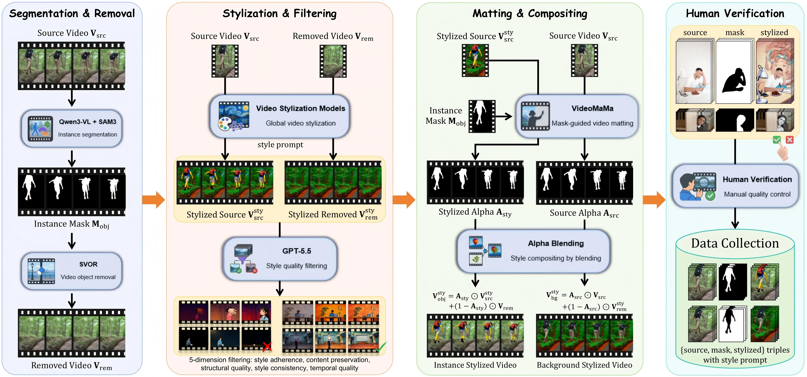
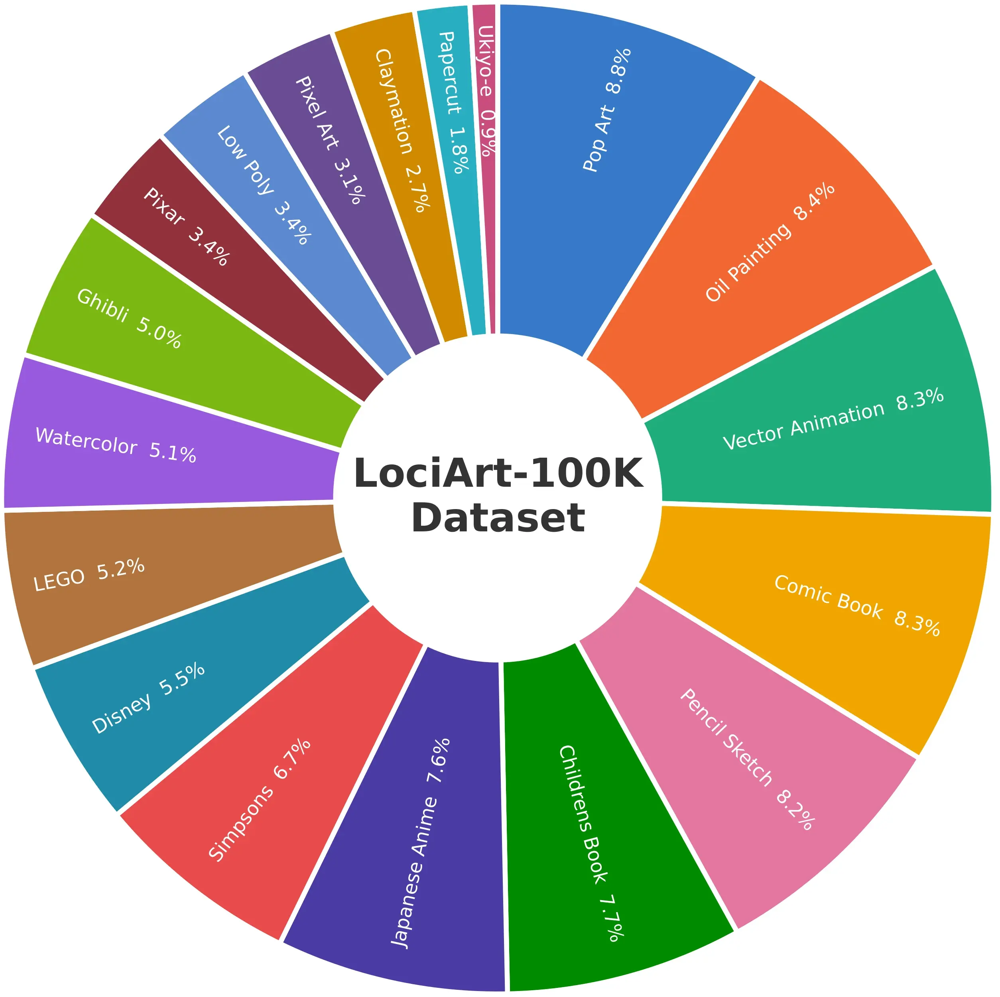
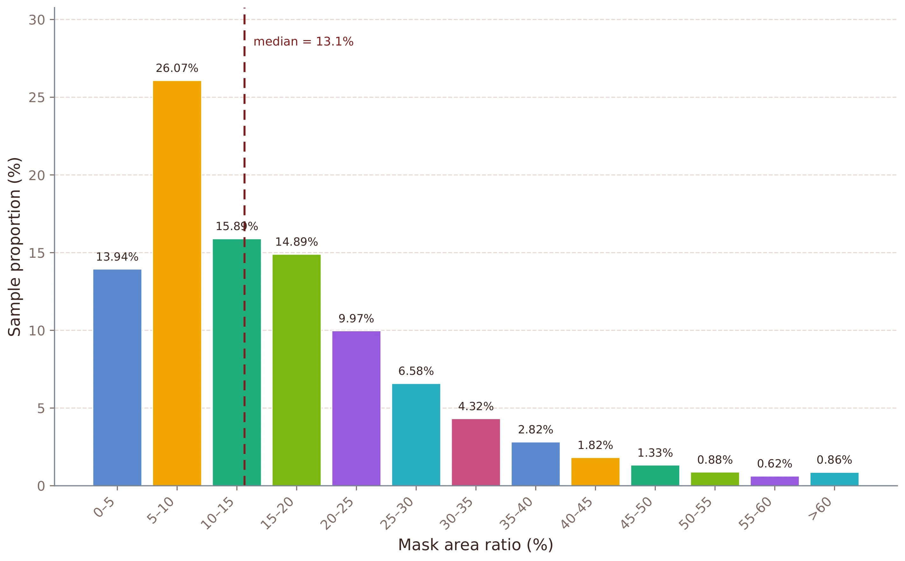
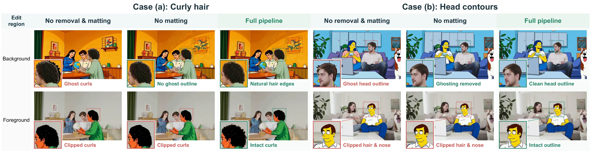
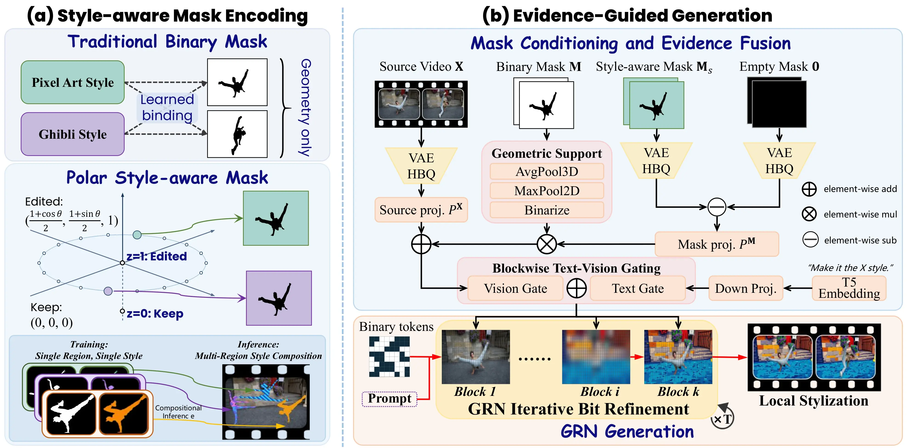
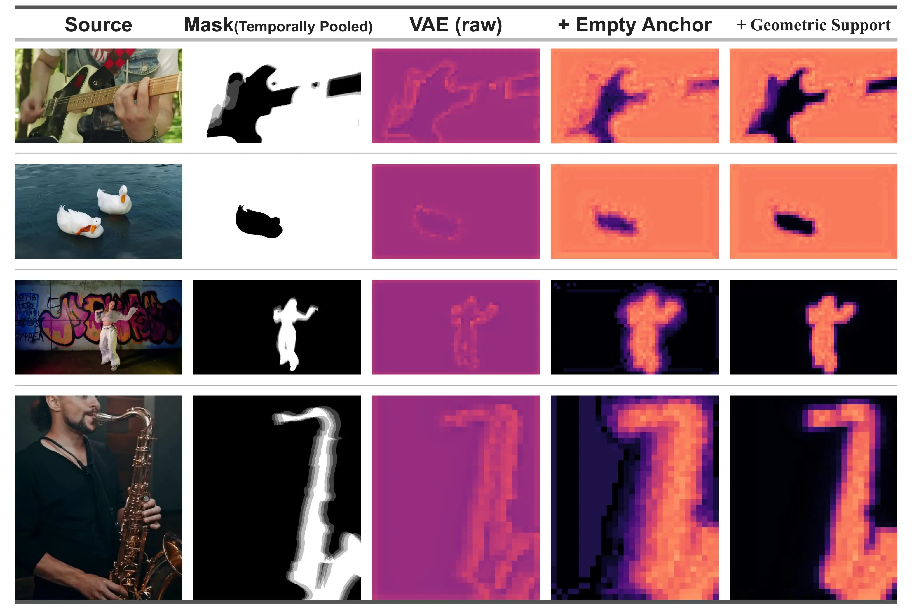
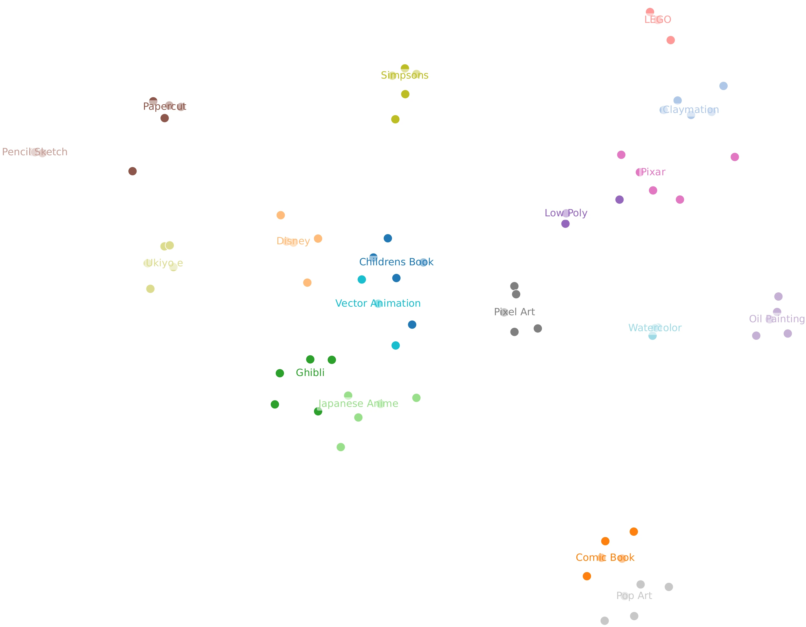
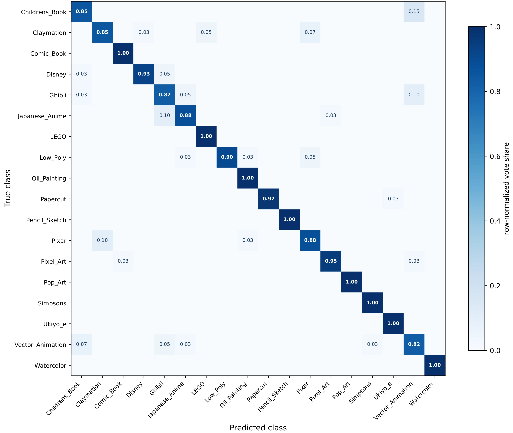
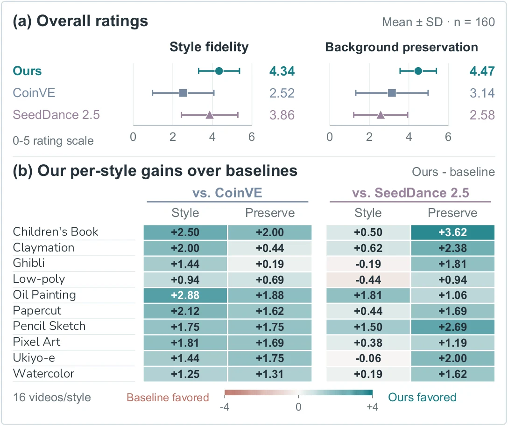

Source, mask, instruction, and locally stylized target.
Abstract
Video stylization typically transforms entire scenes, while local artistic editing requires precise region-style association, spatial control, and temporal consistency. We introduce LociArt, a unified paradigm for free-style local video stylization that explicitly specifies where to stylize and what style to apply while preserving non-target content.
At its core, GRNStyle builds on Generative Refinement Networks and introduces a polar style-aware mask that embeds style identities as equal-norm directions within selected regions. Complementary representation-geometry conditioning combines encoded mask features with raw-mask spatial support. To provide paired supervision, we develop an automated pipeline combining global stylization, video object removal, matting, and compositing, and construct the LociArt-100K Dataset. We further establish the LociArt Benchmark, comprising 80 source videos and 84 target masks covering 168 foreground/background cases, with a Style Prototype Similarity (SPS) evaluation scheme.
LociArt-100K Dataset
LociArt-100K contains 100K paired 720P videos for free-style local video stylization. The dataset is built by separating global style generation from spatial composition. Source and object-removed videos are globally stylized, filtered, matted, and recombined into complementary foreground and background targets.
Dataset construction
Data construction pipeline
The pipeline combines global stylization, object removal, alpha matting, and mask-guided compositing to produce paired local-stylization supervision.

From Ghibli and claymation to pixel art and watercolor.
Global stylization candidates entering human verification.
Local composites accepted after boundary and temporal review.
Dataset composition
Dataset statistics
LociArt-100K covers 18 artistic categories and a broad distribution of foreground mask area ratios.


Interactive sample browser
Pipeline stages
Inspect source, mask, removal, stylization, and final foreground/background composites.
Construction analysis
Data-construction ablation
Direct compositing can leave ghosts or clip stylized contours; object removal and alpha matting resolve different failure modes.

GRNStyle
GRNStyle binds style identities to target regions and combines encoded mask features with explicit geometric support. Source evidence guides content preservation throughout refinement.

Polar style-aware mask
Each style is assigned a fixed equal-norm direction on a circle. Its coordinates are embedded inside the selected region, making the style-region interaction explicit before video encoding.
Ms(q) = M(q) · ( (1+as,1)/2, (1+as,2)/2, 1 )
Representation Geometry
VAE-encoded mask features supply spatiotemporal context, while geometric support from binary occupancy localizes mask evidence and suppresses spatial spillover.
ΔZM = Φ(Ms) - Φ(0)
Compositional inference
Disjoint regions can carry their own learned style codes through the same conditioning interface, without adding channels or conditioning tokens.
Msmulti = Σj Msj
| Configuration | SPS ↑ | CLIPT ↑ | PSNR ↑ |
|---|---|---|---|
| Base | 0.541 | 0.180 | 20.09 |
| Base + Polar | 0.553 | 0.181 | 21.34 |
| Base + RG | 0.544 | 0.179 | 25.07 |
| GRNStyle | 0.554 | 0.181 | 25.78 |
Component ablation. Representation-geometry conditioning (RG) and polar style-aware masks.

LociArt Benchmark
The benchmark separates regional style quality, non-target preservation, and temporal consistency, rather than collapsing everything into a single global score.
Each with 81 aligned frames.
Some videos contain two selected subjects.
Foreground and background editing for every unit.
Macro-averaged video-level accuracy under leave-one-source-out validation.


Similarity to a class-specific prototype bank in CSD feature space.
Regional alignment between the edited region and the canonical style phrase.
Fidelity to the source outside the intended edit region.
Adjacent-frame CLIP feature similarity.
Style correctness, coverage, and cross-frame stability.
Source fidelity and temporal stability outside the edit.
Local Stylization Results
GRNStyle achieves the best SPS for foreground and background stylization, the best background CLIPT, and a strong trade-off between regional style and non-target preservation.
LociArt Benchmark
Quantitative comparison
Performance is measured with regional style quality, non-target preservation, temporal consistency, and VLM-based perceptual scores.
| Method | Venue | SPS ↑ | CLIPT ↑ | PSNR ↑ | TC ↑ | Style ↑ | Preserve ↑ | |||
|---|---|---|---|---|---|---|---|---|---|---|
| fg | bg | fg | bg | fg | bg | |||||
| LEAST*†‡ | arXiv '24 | 0.283 | 0.302 | 0.158 | 0.173 | - | - | 0.953 | 2.20 | 4.50 |
| VACE-1.3B | ICCV '25 | 0.156 | 0.191 | 0.114 | 0.132 | 32.35 | 29.17 | 0.981 | 0.05 | 5.00 |
| UniVST*‡ | TPAMI '25 | 0.191 | 0.286 | 0.127 | 0.165 | 27.69 | 23.92 | 0.969 | 1.83 | 4.40 |
| RegionRoute‡ | CVPR '26 | 0.317 | 0.491 | 0.154 | 0.183 | 29.38 | 13.17 | 0.955 | 2.41 | 2.75 |
| StyleGallery*†‡ | CVPR '26 | 0.230 | 0.325 | 0.146 | 0.183 | - | - | 0.957 | 3.39 | 4.77 |
| CoinVE-Edit | arXiv '26 | 0.248 | 0.251 | 0.153 | 0.159 | 20.71 | 16.76 | 0.983 | 3.11 | 3.93 |
| Seedance 2.5 | Commercial | 0.347 | 0.358 | 0.173 | 0.175 | 18.50 | 18.76 | 0.984 | 3.98 | 2.40 |
| VACE-1.3B (our FT) | - | 0.386 | 0.676 | 0.155 | 0.185 | 25.43 | 25.49 | 0.980 | 4.52 | 4.56 |
| GRNStyle-2B (ours) | - | 0.407 | 0.705 | 0.160 | 0.199 | 25.92 | 26.15 | 0.983 | 4.62 | 4.64 |
Benchmark comparison. fg/bg denote editing the target mask and its complement. * Training-free methods. † Direct mask-compositing methods omit PSNR because non-edited pixels are copied. ‡ Image-based methods. FT denotes local-stylization fine-tuning.
0.705SPS backgroundBest overall
0.199CLIPT backgroundBest overall
4.62VLM StyleHighest overall
0.983Temporal consistencyNear-best
State-of-the-art samples
Qualitative comparison
Compare GRNStyle with CoinVE-Edit, Seedance 2.5, and RegionRoute where available. All 60 comparison videos in the project sample set are included.
Human evaluation
User study
Twenty participants rated a 160-case subset (16 cases per style) for style fidelity and background preservation.

Key findings
Consistent gains across styles
GRNStyle outperforms CoinVE-Edit on both criteria for all ten styles, improves preservation over Seedance 2.5 for every style, and improves style fidelity for seven styles.
- 4.34 mean style fidelity
- 4.47 mean background preservation
- 20 participants across 160 cases
Replay-free style expansion
New style without replay
Expanding from 10 to 15 classes without replaying old classes retains the original styles with substantially less forgetting and adds the five new styles through polar conditioning.
| Configuration | 10 classes (old) | 5 classes (new) | ||||
|---|---|---|---|---|---|---|
| SPS ↑ | CLIPT ↑ | PSNR ↑ | SPS ↑ | CLIPT ↑ | PSNR ↑ | |
| Binary, 10 classes | 0.547 | 0.177 | 25.42 | - | - | - |
| Binary, 15 classes | 0.445 (-0.102) | 0.158 (-0.019) | 25.43 | 0.588 | 0.197 | 25.39 |
| Polar, 10 classes | 0.553 | 0.180 | 25.75 | - | - | - |
| Polar, 15 classes | 0.531 (-0.022) | 0.172 (-0.008) | 25.77 | 0.590 | 0.199 | 25.74 |
Replay-free style expansion. Expanded models are trained only on the five new classes. Retention and acquisition are evaluated on 1,680 original-style and 840 new-style cases, respectively.
Video Gallery
All videos from the project sample set are organized into focused galleries with source, mask, and generated result context. The second part compares GRNStyle with direct pipeline outputs.
GRNStyle outputs
Foreground, background, and multi-region
Four curated cases in each category, with source and mask context for direct inspection.
End-to-end diagnostics
GRNStyle vs. Pipeline
These examples compare direct pipeline outputs with GRNStyle when a stylized subject no longer matches the source mask or when an object-removal stage damages scene elements.
Citation
@article{chen2026lociart,
title = {LociArt: A Unified Paradigm for Free-Style Local Video Stylization},
author = {Chen, Yuxuan and Xie, Feng and Hu, Jiagao and Li, Fuhao and Wang, Zepeng and Wang, Fei and Zhou, Daiguo},
year = {2026},
note = {Preprint}
}All figure assets on this page are converted from the source figure PDFs. Quantitative tables are redrawn in HTML.